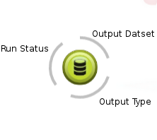
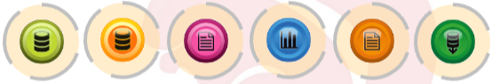
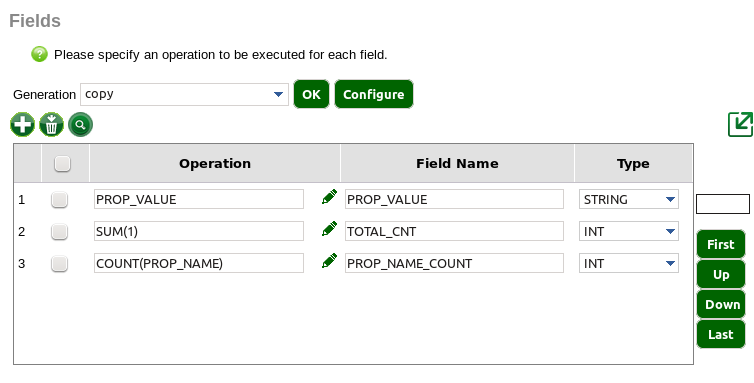

The canvas is designated to build workflows and these workflows are controlled by Oozie to run jobs. A workflow can contain many linked actions that produce results. When an action is added to the canvas, it will have an automatically generated name, however, this can be renamed. This new action must be configured to ensure that the workflow will run correctly. Source should always be the first action added to the workflow. Source will identify the type and location of the data. Linking actions together is then possible depending on what the input and output types of each action are. For example, to link a source and Jdbc action together, the source data type should be database table.
In order to get more details about a particular action, select the action and click Ctrl. This will display useful information such as the output fields, errors and comments.
Further tutorials on Canvas can be found here
An action is a procedure that controls a data set and/or runs a process on Hadoop. An action can take several inputs and produce several outputs.
When configuring the action (naming or renaming), it is important to remember that the action name should NOT BE used as a field name otherwise it could cause problems when running or maintaining the workflow.
Actions are represented by icons.Below is a list of icons and what type of action each icon represents:
The three arcs around an action indicate the run status, whether or not an dataset has been output and the output type for each action. The user can see more information on these by clicking the legend button on the top lefthand corner of the canvas.

Icon colour depends on the technology used (processing engine and/or data format). Keeping colour consistent is an easy way to spot a switch of processing engine and/or format which could be a data pipeline bottleneck.

An output type defines the requirements needed to read a data set. It may be the technology used (Apache Hive or Hadoop Distributed File System), the path to the data set or/and format details.
Packages may includes their own output types, but some output types exists by default.
An action can take several input classes or file types which can be dependant on the technology used. Each input into an action must conform to the type that the action can receive, i.e. Spark actions accept Text MapReduce Directory inputs, JDBC actions take JDBC inputs etc. Details on the accepted inputs are available through each actions individual help page, accessible from the list on the help home page.
An output is generated after each canvas runs the action. Each storage state has a corresponding colour shown in the lower righthand arc of the action. Data can be stored as:
Certain actions may create more than one dataset and other actions may accept more than one type of dataset. In these cases, the user may be asked to choose a dataset when linking the action. A link name will always be in the form an output -> input, where output/input is respectively the name of the action output/input. When no other options are possible, output or input names are omitted. For example '-> input', means that the output action has only one data output that corresponds with the input constraint.
Every field is associated to a ‘type’ in Red Sqirl. Type will help the user to clarify what the fields are and what can be done from each field. For example, two dates should not be added together.
Action Configuration is accessed when first setting up and configuring an action. They can be accessed again to reconfigure an action by hovering over the action pressing Ctrl and clicking options and configure.

These tables are used to set the outputs of the action, using operations performed on the inputs. Operations can manually added by clicking the  button and edited using the
button and edited using the  button. In some cases, generators are available to automatically populate the table. The operation group can be selected on a drop down menu and automatically generated by pressing , or further configured by pressing . In the generator configuration window operations can be selected and and added to the table by clicking the generate button.
button. In some cases, generators are available to automatically populate the table. The operation group can be selected on a drop down menu and automatically generated by pressing , or further configured by pressing . In the generator configuration window operations can be selected and and added to the table by clicking the generate button.
Variables can be defined in a workflow by double clicking on the parameter object on the top left of the canvas. Variables can added by clicking the  button and filling in the fields.
button and filling in the fields.
Static values are accepted, a list of functions is available by clicking  . Variables can be used in almost all text fields but not for the field names and other workflow meta-data parameters. Variable names should only contains letters, underscore and numbers. The user can also call oozie functions inline.
. Variables can be used in almost all text fields but not for the field names and other workflow meta-data parameters. Variable names should only contains letters, underscore and numbers. The user can also call oozie functions inline.
Super Actions are a logical group of actions, have a name and are included into a model. Super Actions can be reused in any other workflow and included into the user's footer. A user creates a super action with the Super Action Aggregate.
Super Action can be generated from workflows by selecting the actions on the workflow and clicking the aggregate button in the canvas (above the canvas or in edit -> aggregate). When the user selects aggregate, a pop-up will be generated and will be used to configure the Super Action. The configuration will also require the names of the inputs and the outputs.
(above the canvas or in edit -> aggregate). When the user selects aggregate, a pop-up will be generated and will be used to configure the Super Action. The configuration will also require the names of the inputs and the outputs.
Expanding a Super Action copies the actions within a Super Action into the current workflow. To expand a Super Action from a workflow the user can go into the options menu while hovering over the Super Action and click Expand.
Red Sqirl comes with scheduling functionalities. A canvas describes what Oozie calls a 'bundle'. A bundle is a group of schedule jobs creating a data pipe. For example, the user wants to summarize the data daily and would like to create a weekly report from the summary. The bundle will be composed of daily processes, but they will be fed into a report on a weekly basis. Each process will run independent of each other. Visually, a bundle will always show a colour in the background. Each independent process is called a coordinator, a separate colour will be assigned on the screen for every defined coordinator. Specific variables can be set and used in the Red Sqirl actions. A coordinator starts and ends with either a synchronous dataset, the path contains a timestamp; or an asynchronous dataset, the path is static. For an asynchronous dataset, proceed as a normal workflow then set the running time inside the coordinator itself. For a synchronous dataset, use a synchronous source or combine a synchronous sink with a synchronous sink filter. For more details about how to setup a scheduled job, please review the building a workflow section.
A schedule workflow uses different path type:
While clicking the ‘run’ button, Red Sqirl will create an execution plan, generate the corresponding Oozie xml files and script and kick off the Oozie job. The procedure follows the rules given below:
Red Sqirl will execute as many tasks as possible in parallel, and will trust the YARN (Yet Another Resource Negotiator) to queue correctly, if necessary.
Red Sqirl will always attempt to optimise the process. It means if the user has a one-to-one daisy-chained actions, and those actions are compatible, they will be merged.
For example, if the user’s workflow is composed of Pig Select action, linked solely to another Pig Select, both will be merged at running time to optimise the execution. Forks, joins, and saved transitional dataset (if one of the transitional dataset is buffered or recorded) take precedence over the optimisation.
When running a workflow, Red Sqirl will always examine the data available and run the requested output from the closest point. In schedule mode, only the entire dataset can run and it is not possible to select a given coordinator to run.
If the user clicks on Create Link, the arrow will be generated in the selected object.
If the user clicks on Rename Object, a pop-up will appear and can be used to configure the name and the comments of the selected object.
If the user clicks on Configure, a pop-up will appear and can be used to configure the selected object.
If the user clicks on Data Output, a pop-up will appear and can be used to configure the data output the selected object.
If the user clicks on Clean Data then the user can clean the data output of the object. Temporary and buffered data will be erased but not recorded.
If the user clicks in Ozzie Action Logs, a new url will open and show the Ozzie logs.
Specifically for Super Actions:
If the user clicks in Edit Super Action, a new tab will open with the select super action to edit. The user can edit if she has permissions to edit.
If the user clicks on Expand, the super action will be replaced with its content.
If the user right clicks in Super Action and clicks on refresh Super Action, the canvas is going to refresh the Super Action and will display or remove errors.
Regular expressions are used frequently in Red Sqirl. A regular expression will validate an entry that a user has typed.
| Construct | Matches |
|---|---|
| Examples | |
| ^.*[A-Z].*$ | Contains an upper case character |
| [a-z]([a-z0-9_]*) | Starts with a lower case character optionally followed by other lower case character, under score or number |
| ^(#\\d{1,3}|.)?$ | 1 to 3 digit or one character |
| Characters | |
| x | The character x |
| \\ | The backslash character |
| \t | The tab character ('\u0009') |
| \n | The newline (line feed) character ('\u000A') |
| \r | The carriage-return character ('\u000D') |
| Character classes | |
| [abc] | a, b, or c (simple class) |
| [^abc] | Any character except a, b, or c (negation) |
| [a-zA-Z] | a through z or A through Z, inclusive (range) |
| [a-d[m-p]] | a through d, or m through p: [a-dm-p] (union) |
| [a-z&&[def]] | d, e, or f (intersection) |
| [a-z&&[^bc]] | a through z, except for b and c: [ad-z] (subtraction) |
| [a-z&&[^m-p]] | a through z, and not m through p: [a-lq-z](subtraction) |
| Predefined character classes | |
| . | Any character |
| \d | A digit: [0-9] |
| \D | A non-digit: [^0-9] |
| \s | A whitespace character: [ \t\n\x0B\f\r] |
| \S | A non-whitespace character: [^\s] |
| \w | A word character: [a-zA-Z_0-9] |
| \W | A non-word character: [^\w] |
| Boundary matchers | |
| ^ | The beginning of a line |
| $ | The end of a line |
| \b | A word boundary |
| \B | A non-word boundary |
| \A | The beginning of the input |
| \G | The end of the previous match |
| \Z | The end of the input but for the final terminator, if any |
| \z | The end of the input |
| Greedy quantifiers | |
| X ? | X, once or not at all |
| X * | X, zero or more times |
| X + | X, one or more times |
| X {n } | X, exactly n times |
| X {n ,} | X, at least n times |
| X {n ,m } | X, at least n but not more than m times |
| Reluctant quantifiers | |
| X ?? | X, once or not at all |
| X *? | X, zero or more times |
| X +? | X, one or more times |
| X {n }? | X, exactly n times |
| X {n ,}? | X, at least n times |
| X {n ,m }? | X, at least n but not more than m times |
| Possessive quantifiers | |
| X ?+ | X, once or not at all |
| X *+ | X, zero or more times |
| X ++ | X, one or more times |
| X {n }+ | X, exactly n times |
| X {n ,}+ | X, at least n times |
| X {n ,m }+ | X, at least n but not more than m times |
| Logical operators | |
| XY | X followed by Y |
| X |Y | Either X or Y |
| (X ) | X, as a capturing group |
| Quotation | |
| \ | Nothing, but quotes the following character |
| \Q | Nothing, but quotes all characters until \E |
| \E | Nothing, but ends quoting started by \Q |